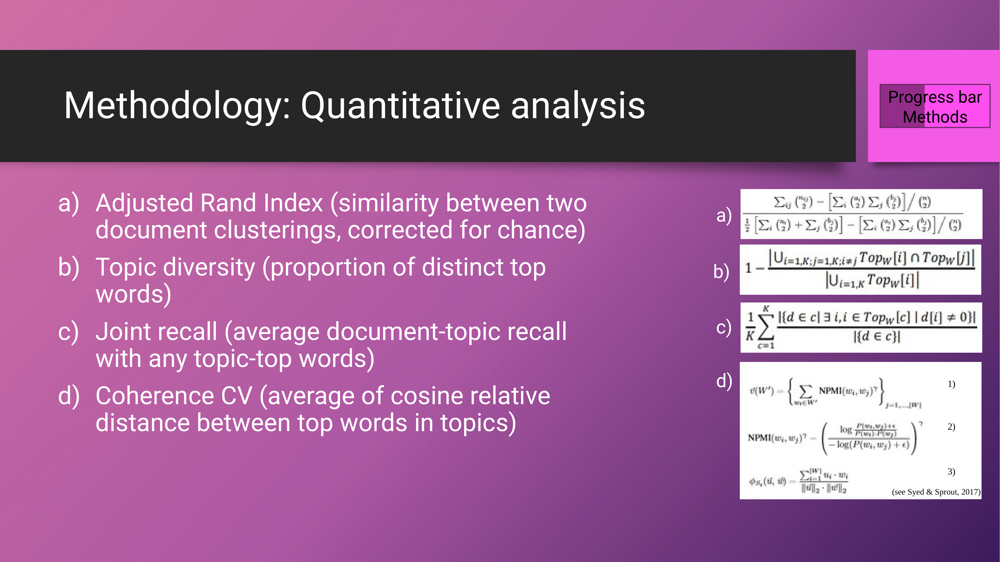

14 A Comparative Analysis of Topic Modeling Techniques for Scholarly Corpora
Overview
This chapter investigates a central question in computational text analysis: whether robust topic modelling necessitates full-text documents, or if titles and abstracts provide sufficient data. The authors undertake a rigorous comparative analysis of two prominent techniques, Latent Dirichlet Allocation (LDA) and BERTopic. They applied these models to a corpus on Astrobiology, systematically segmenting the data into three distinct types: full-text documents, abstracts alone, and titles alone.
Their evaluation framework is twofold. A qualitative analysis explores thematic clustering and the coherence of top-words, whilst a comprehensive quantitative analysis employs four key metrics. These include the Adjusted Rand Index (ARI) to measure model similarity, Topic Diversity to assess the uniqueness of topics, Joint Recall to evaluate content coverage, and Coherence CV to gauge the interpretability of the generated topics.
The findings reveal a nuanced trade-off between the models and data types. BERTopic, for instance, excels in generating diverse topics, particularly from titles. Conversely, LDA models trained on full-text achieve the highest joint recall, indicating superior content coverage. The results suggest that the optimal choice of model and input data depends entirely on the specific analytical goals of the researcher, whether they prioritise thematic diversity, content coverage, or topic coherence.
14.1 Topic Modelling in HPSS

Topic modelling has established itself as a significant analytical tool within the domains of History, Philosophy, and Sociology of Science (HPSS). Its utility is demonstrated across a range of applications that enhance scholarly inquiry. Within these fields, scholars employ this technique to identify influential authors and papers, trace the conceptual evolution of scientific ideas over time, and map the intellectual structure of entire disciplines.
Furthermore, topic modelling enables the discovery of previously hidden thematic connections in large corpora, the analysis of long-term trends in scientific discourse, and the comparison of distinct research programmes. This capacity for large-scale analysis also makes it an invaluable resource for conducting comprehensive literature reviews.
14.2 Research Question and Methodology
The authors’ investigation centres on a fundamental research question: does robust topic modelling depend on the analysis of full-text documents, or can comparable results be achieved using only titles or abstracts?
To answer this, the team implements a formal comparative methodology. This framework systematically evaluates two distinct topic modelling approaches—the probabilistic Latent Dirichlet Allocation (LDA) and the transformer-based BERTopic. They apply each model to three different granularities of text data: complete full-text documents, abstracts, and titles. Subsequently, the outputs from these combinations are assessed through both qualitative and quantitative analysis, providing a multi-faceted evaluation of their performance.
14.3 Methodology
The investigation proceeds with a detailed examination of the methodologies employed to compare the two topic modelling techniques.
14.4 Comparing LDA and BERTopic

At their core, both Latent Dirichlet Allocation and BERTopic share common postulates; they generally rely on a bag-of-words representation and conceptualise topics as distinct distributions over a vocabulary. Nevertheless, their underlying mechanisms differ significantly. LDA is a generative probabilistic model that assumes each document is a mixture of various topics.
In contrast, BERTopic leverages modern transformer models to create contextual word and sentence embeddings. It then applies clustering algorithms to these rich semantic representations to identify topics. This allows it to capture nuances of meaning that frequency-based models like LDA may miss.
14.5 Framework for Qualitative Comparison
The authors established a clear framework for the qualitative comparison of the models, using a specialised Astrobiology corpus as their primary dataset. Within this framework, they configured an LDA model to generate 25 distinct topics from the corpus.
Following this initial modelling, the team further organised these 25 topics through a clustering process into four high-level thematic groups. To visualise the interplay and connections between these themes, the analysts created a correlation graph, mapping the relationships between the identified topic clusters.
14.6 Quantitative Analysis Metrics

The quantitative evaluation relies on four distinct metrics, each chosen to assess a specific aspect of model performance. The Adjusted Rand Index (ARI) measures the similarity between the clustering structures produced by different topic models. Topic Diversity calculates the percentage of unique words present in the top terms across all topics, providing a measure of model redundancy.
Joint Recall is used to evaluate how effectively a model trained on a text subset, such as abstracts, can retrieve the topics found in the corresponding full-text model. Finally, Coherence CV assesses the human interpretability of a topic by computing the semantic similarity of its most prominent words.
14.7 Results

The subsequent sections present the empirical results derived from the authors’ comprehensive qualitative and quantitative analyses.
14.8 Model Similarity via Adjusted RAND Index

The authors used the Adjusted RAND Index (ARI) to quantify the similarity between the outputs of different models. Their results, presented in a matrix, show that models of the same family—such as LDA models trained on abstracts versus titles—exhibit greater similarity to one another than they do to models from the other family, like BERTopic.
This finding indicates that the choice of algorithm (LDA vs. BERTopic) has a more profound impact on the resulting topic structure than the choice of input text. Furthermore, the analysis reveals that models trained on abstracts more closely resemble their full-text counterparts than models trained on titles do, suggesting abstracts retain more of the core thematic structure.
14.9 LDA Performance Across Text Types
An analysis of Latent Dirichlet Allocation (LDA) performance across different text granularities reveals notable variations. Using heatmaps to visualise topic distributions, the authors compared models trained on full-text documents against those trained on only abstracts or titles.
Their results indicate that whilst some thematic correspondence exists, the topic structures generated from abstracts and titles frequently diverge from those derived from the full text. This suggests that relying on shorter text segments can lead to a different, and potentially less complete, thematic representation of the corpus when using LDA.
14.10 BERTopic Performance Across Text Types

The performance of BERTopic also varies significantly depending on the input text. Visualised through three distinct matrices, the team’s analysis shows that the BERTopic model trained on full-text documents tends to produce a high number of small and highly specific topics.
In contrast, when trained on abstracts, the model yields topics that are more stable and clearly defined. Training on titles, however, results in the formation of broader and more generalised thematic categories, demonstrating how the input data’s scope directly influences the granularity of the output.
14.11 Qualitative Analysis of LDA Top-Words
A qualitative comparison of the top-words generated by LDA models highlights the impact of text granularity on topic interpretability. By examining the lists of top-words from models trained on full-text, abstracts, and titles, the authors observed clear divergences in topic coherence and thematic focus.
For instance, a distinct topic related to ‘life detection’ might appear clearly in both the full-text and abstract-based models. However, in the model trained solely on titles, the same theme could become less coherent, potentially merging with other, more general topics and losing its specific meaning.
14.12 Comparative Topic Formation
Contrasting the behaviour of LDA and BERTopic reveals fundamental differences in how they construct topics from text. The authors’ analysis shows that a single, broad topic identified by an LDA model can often be resolved into several more specific and nuanced topics by BERTopic, a phenomenon known as topic splitting.
Conversely, BERTopic’s ability to discern fine-grained semantic distinctions may result in multiple related topics that LDA, with its focus on word co-occurrence, merges into a single, more generalised category. These patterns of splitting and merging underscore the distinct operational logics of the two algorithms.
14.13 Quantitative Results: Topic Coherence

The quantitative analysis of topic coherence, measured using the CV score, produced nuanced results. When comparing BERTopic and LDA across titles, abstracts, and full-text data, no single model or text type demonstrated consistent superiority.
Instead, topic coherence appears to be highly dependent on the specific model configuration. The number of topics a user specifies is a particularly influential variable, with coherence scores for both LDA and BERTopic fluctuating significantly as this parameter changes.
14.14 Quantitative Results: Topic Diversity

In the evaluation of topic diversity, a clear pattern emerged. The authors found that BERTopic models consistently outperform their LDA counterparts, generating topic sets with less word overlap.
Notably, the peak diversity scores were achieved when BERTopic was trained on titles alone. This finding suggests that for research goals where maximising the variety of distinct themes is paramount, the combination of the BERTopic algorithm and title-only data provides a highly effective strategy.
14.15 Quantitative Results: Joint Recall

The analysis of joint recall, which measures how well a model captures the themes of the entire document, yields an unambiguous result. Models trained on full-text data consistently achieve the highest recall scores.
Specifically, the LDA model applied to full-text documents registered the top performance. This outcome demonstrates that for applications where comprehensive thematic coverage is the primary objective, there is no substitute for analysing the complete text of the documents.
14.16 Summary Matrix of Model Performance
A summary matrix provides a consolidated overview of the comparative analysis. It systematically contrasts the performance of LDA and BERTopic when applied to full-text, abstract, and title data. Using a range of evaluation metrics, the matrix employs a simple visual key—filled circles—to indicate which combination of model and data input excels for each specific measure, allowing for a quick, at-a-glance assessment of the relative strengths of each approach.
14.17 Overall Performance Summary
The final performance summary synthesises the findings across all evaluation criteria, including overall fit, top-word quality, coherence, diversity, and joint recall. This overview uses filled circles to denote strong performance and red crosses to flag identified weaknesses.
The LDA model trained on full-text, for example, is highlighted for its excellent joint recall and overall fit but shows limitations in topic diversity. Conversely, the BERTopic model trained on titles excels in producing diverse topics but at the cost of lower content coverage. This clearly illustrates a fundamental trade-off: methods that maximise topic diversity often do so at the expense of comprehensive recall, and vice versa.
14.18 Discussion and Conclusions
In conclusion, the authors synthesise the distinct performance characteristics of LDA and BERTopic when applied to different sections of scholarly documents. As their similarity matrix demonstrated, the choice of algorithm is a more powerful determinant of the final topic structure than the granularity of the input text.
Scholars seeking the most comprehensive thematic coverage should favour full-text analysis, particularly with LDA, which excels in joint recall. However, for projects prioritising the discovery of a wide and diverse range of topics, BERTopic applied to titles proves to be a superior strategy. Ultimately, the study confirms that there is no single best approach; the optimal combination of model and data is entirely contingent on the specific objectives of the research.